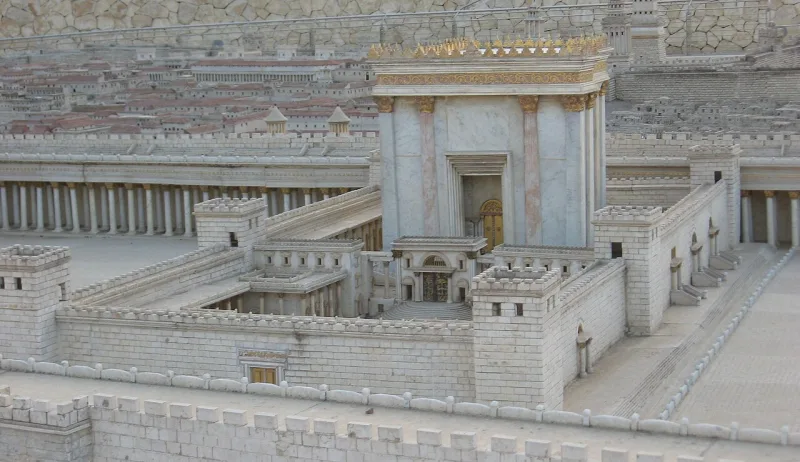

LDS scholars have a real answer here. Say so before your friend does.
The Nephites kept the law of Moses strictly. See 2 Nephi 5:10 and 25:24.
They offered burnt sacrifices too, at 1 Nephi 5:9 and Mosiah 2:3. Yet Nephi was of the tribe of Joseph, through Manasseh (Alma 10:3).
And at 2 Nephi 5:26 he makes his brothers Jacob and Joseph priests.
The law of Moses restricted priesthood and sacrifice to Aaron's line inside Levi. See Numbers 3:9-12 and 16:39-40.
Hebrews 7:13-14 says plainly that of another tribe "no man gave attendance at the altar." 2 Chronicles 26:16-21 shows what happened when a king tried.
That the Nephites held the higher Melchizedek priesthood. Jacob was ordained "after the manner of his holy order" at 2 Nephi 6:2, and Alma 13 develops it.
That order predates Levi in the Bible itself — Genesis 14, Psalm 110, Hebrews 7:4-10. They add three things.
The book never claims Levitical authority. No Levites came with Lehi.
And real Jewish communities of that era ran altars outside Jerusalem, at Elephantine and Arad.
Genuinely arguable, and this is a small case. Alma 13 gives them a textual base, and Elephantine is real history.
The tension is that Hebrews 7 treats a non-Levitical priesthood as incompatible with the law the Nephites claim to keep in all things.
"How does a man from Joseph's tribe offer sacrifice under Moses' law?"

The Nephites held the Melchizedek priesthood, which the Bible puts before Levi.
Apologists argue the Nephites held the higher Melchizedek priesthood. Jacob was ordained 'after the manner of his holy order' at 2 Nephi 6:2, and Alma 13 develops the idea. In the Bible that order comes before Levi and stands above it. See Genesis 14, Psalm 110, and Hebrews 7:4-10. So the rules about Levi did not bind them.
They add three things. The Book of Mormon never claims Levite authority for these priests. No Levites travelled with Lehi's party. And Jewish communities of exactly Lehi's era ran altars outside the Jerusalem system, at Elephantine and at Arad.
FAIR concludes the practice was not unthinkable for Israelites far from home.
Small case: Alma 13 gives them a base, but Hebrews 7 keeps the tension alive.
The Melchizedek reading has a base in the text itself, at Alma 13. And Elephantine gives real historical precedent for irregular practice far from home.
But Hebrews 7 treats a priesthood outside Levi as at odds with the law of Moses. And the Nephites claim to be keeping that law in all things.
So the tension between strict law-keeping and a non-Aaronic altar is not resolved.